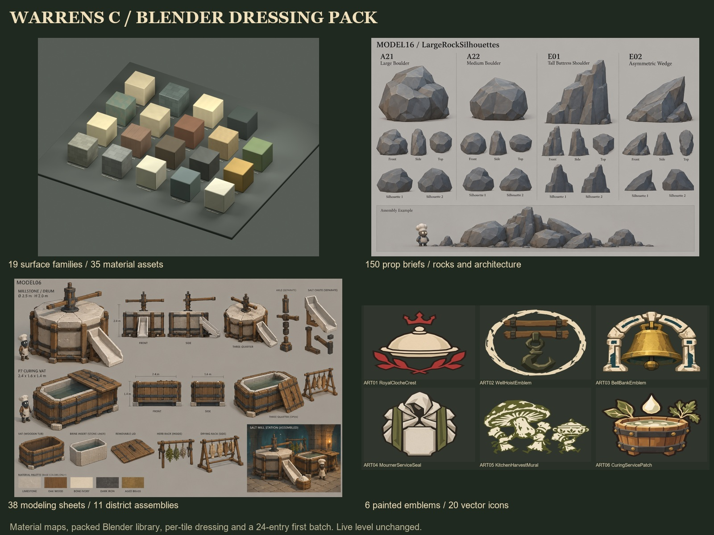
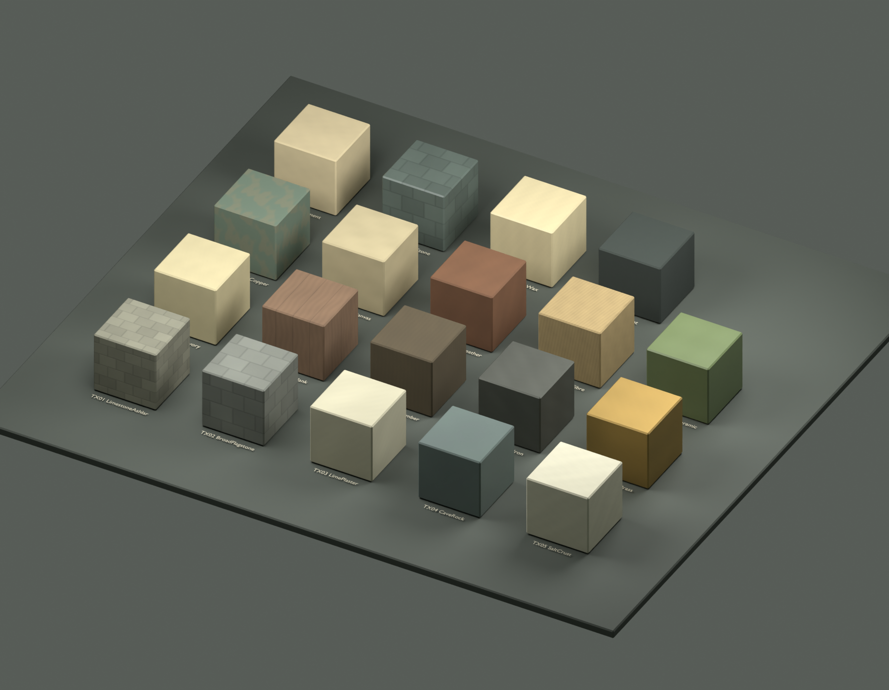
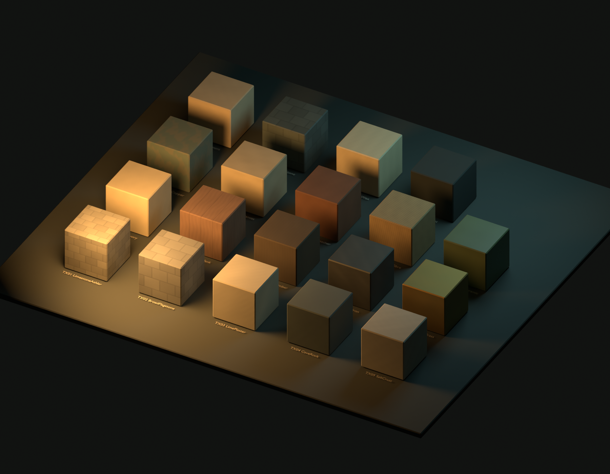
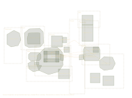
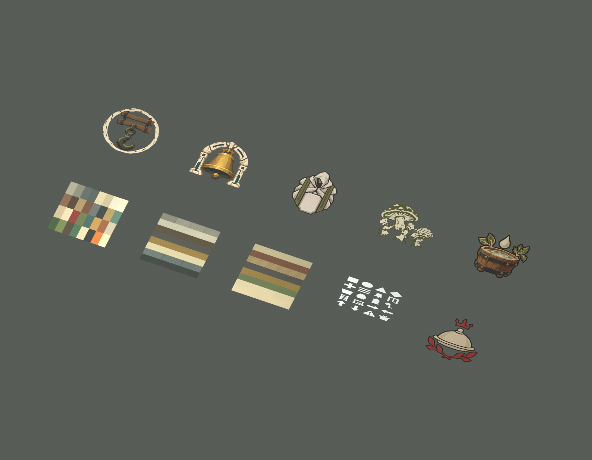
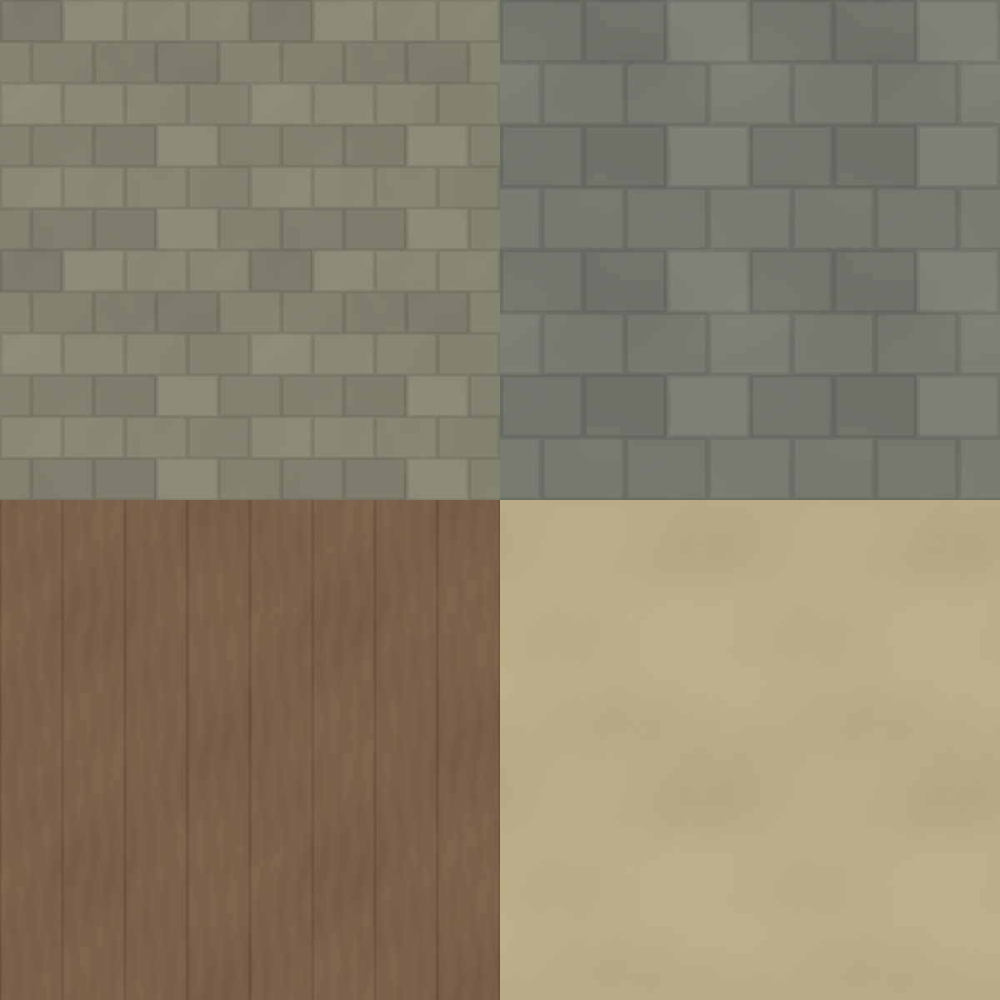

Material contract
95 surface maps plus palette, trim, alpha art and FX inputs. Neutral albedo; aligned technical maps; both normal conventions.
Channels, UVs and import notesChain Crossing & Sluice: complete local kit · 88 components · 23 model sheets · 4 assembly/player views
19 material families · 150 prop briefs · 11 source tiles · 38 modeling sheets · 11 district assembly sheets · 6 transparent painted graphics. Actual texture inputs and a packed Blender material library, with proposals clearly separated from current layout measurements.

149 new-model candidates with linked references · I14 reuses the existing Red key. Filter the sheets below by asset, name or district.

95 surface maps plus palette, trim, alpha art and FX inputs. Neutral albedo; aligned technical maps; both normal conventions.
Channels, UVs and import notesDimensions, pivots, separate moving parts, UV scheme, collision policy, material IDs and a ready-to-copy prompt for every entry.
Blender handoffAll 24 room records, all 11 current tile boundaries and the ten authored landmark/clue views are covered.
Source authority and differences
Blender studio study, not Unreal game-camera lighting acceptance. No production prop meshes or dressed map are supplied by the swatch scene.

Stacked floors overlap in this 2D diagram. It does not add any route or replace the authored level layout.
BaseColor is sRGB. ORM, height and normals are linear. Use NormalGL in Blender and NormalDX in Unreal. Full channel/UV notes: material guide.


Generate each shared asset once, then instance it across its listed tiles. P0 is the core set; P1 supplies room identity; P2 is optional. Existing actors remain gameplay/collision authority. Start with the 24-entry batch.
| Asset | Priority / role | Dimensions / basis | Materials / tiles | Blender request |
|---|
District assembly images are composition studies with known label/layout drift. Use the written placement constraints and source JSON for actual dressing. The Chain Crossing dossier provides the detailed local component kit.
All densities are proposed, not measured actor counts. Keep current widths, rail gaps, drop landings, low passages, controls and source sightlines clear. Complete placement and acceptance guide.
Click for native full resolution. Written catalog dimensions win over AI dimension labels. Decorative emblems are separate from the six canonical lock glyphs. Native transparent art is 1254px and may be baked onto a power-of-two prop atlas during production.